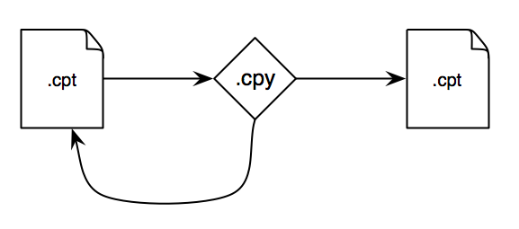
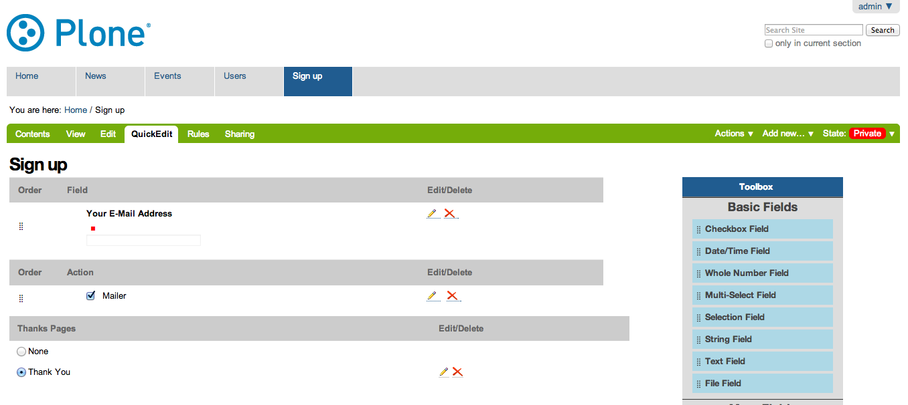

Custom Plone Forms: Navigating the Labyrinth
David Glick
Plone Symposium Midwest 2013
- audience
- introduce myself
What is a form?
Structured way of providing information
What is a form?
It's a structured way of entering information.
 vs.
vs. 
You may recognize this...there's a reason tax forms exist.
Forms aren't unique to the web or computers, but they show up a lot because computers like dealing with structured information.
What is a form?
A good user experience for entering information.
A good form is optimized for user experience, not just ease of processing.
Input controls, help text, validation, etc all give the user clues to help them succeed.

(turbotax example)
Back to the basics: HTTP
The web is built on HTTP.
HTTP lets a client (or browser) request a resource, then returns a response.
HTTP GET
GET /page
What does this do?
HTTP GET method. Requests the news resource.
Server should respond with the content of that page (or an error code).
Query string
GET /search?SearchableText=form+guru
This query searches a Plone site.
The SearchableText parameter "form guru" is encoded as part of the URL.
HTTP POST
POST /Plone/@@register form.fullname=David+Glick&form.username=davisagli&form.email=dglick%40gmail.com&form.password=foobar&form.password_ctl=foobar&_authenticator=1e37eda76bec66dbbb32d854d461aada6669a417&form.actions.register=Register
HTTP supports multiple verbs.
The other common one is POST, which signifies a request that intends to make a change to the remote system instead of just retrieving data.
(Have you resubmitted a form and gotten a warning from your browser? It knows to do that because it's using a POST request, and it doesn't want to make the change twice unless you insist.)
This example registers a new Plone user, if the site has registration enabled.
The parameters are encoded similarly to a query string, but they are in the body of the request, and can be longer.
HTML forms
<form action="newsletter_signup" method="POST"> <input type="email" placeholder="Email" /> <input type="submit" value="Sign up" /> </form>
Unfortunately, I don't have enough minions to delegate my manual HTTP POSTing.
Fortunately, the HTML spec anticipated this, and browsers understand HTML forms.
Here's a simple one that will POST an email field to the newsletter_signup URL.
(Point out the pieces.)
The browser automatically builds the request body.
Handling form input
from Products.Five import BrowserView from Products.Five.pagetemplatefile import ViewPageTemplateFile class SignUpForm(BrowserView): template = ViewPageTemplateFile('signup_form.pt') def __call__(self): if 'form.submitted' in self.request.form: # (store the email here) return self.template()
Let's write some basic Zope-specific code that handles submitting this form.
This is a Zope browser view which we're going to assume is registered to be accessible as newsletter_signup.
It's a common Zope pattern to have a form that submits to its own URL. We determine whether it was submitted by looking for a 'form.submitted' token in the request. Where did that come from?
Determining whether the form was submitted
<form action="newsletter_signup" method="POST"> <input type="email" placeholder="Email" /> <input type="submit" value="Sign up" /> <input type="hidden" name="form.submitted" value="1" /> </form>
We add "form.submitted" as a hidden form input.
(We could also give the submit button a name and check for it in the request, but then our check will fail if someone presses the Enter key instead of clicking the button.)
Validating input
def __call__(self): errors = [] if 'form.submitted' in self.request.form: if 'email' not in self.request.form: errors.append('Please enter your email.') if not errors: # (store the email here) else: XXX return self.template(errors=errors)
Of course, we don't want to sign up the user unless they actually entered an email. So we need to do validation of the input.
In real life we'd also check that it's a valid email address!
HTML has some support for client-side validation, but it's important to do server-side too, because you can't assume someone's using a well-behaved browser.
Displaying errors
<form action="newsletter_signup" method="POST"> <ul tal:condition="options/errors|nothing"> <li tal:repeat="error options/errors" tal:content="error" /> </ul> <input type="email" placeholder="Email" /> <input type="submit" value="Sign up" /> <input type="hidden" name="form.submitted" value="1" /> </form>
Here's some TAL that displays the errors passed into the template.
In a real form we'd be a bit more sophisticated and show the error next to the field it relates to.
Postback
<form action="newsletter_signup" method="POST"> <ul tal:condition="options/errors|nothing"> <li tal:repeat="error options/errors" tal:content="error" /> </ul> <input type="email" placeholder="Email" tal:attributes="value request/form/email|nothing" /> <input type="submit" value="Sign up" /> <input type="hidden" name="form.submitted" value="1" /> </form>
Now that submitting the form might fail with an error, we should make sure that the user's input is not lost.
Here we set the value of the email field based on what's in the request.
Redirect on success
def __call__(self): errors = [] if 'form.submitted' in self.request.form: if 'email' not in self.request.form: errors.append('Please enter your email.') if not errors: # (store the email here) self.request.response.redirect('thank-you') return self.template(errors=errors)
Once the user has successfully filled out the form, we should redirect them somewhere else.
This makes sure that if they reload the page, they won't inadvertently sign up again.
A Menagerie of Form Libraries
“We will encourage you to develop the three great virtues of a programmer: laziness, impatience, and hubris.”—Larry Wall
Once developers have written a forms like this, they tend to try to find ways to avoid repeating themselves.
Sometimes they create a library to make it easy to reuse these patterns. Over the years there's been a proliferation of these.
A Menagerie of Form Libraries
- CMFFormController
- Archetypes
- PloneFormGen
- Formlib
- z3c.form
- Deform
- YAFOWIL
And these are just the Zope-specific ones...
Common uses: #. Render an HTML form #. Validate input #. Execute actions
CMFFormController
From the through-the-web coding days of Zope. A basic step beyond plain templates and scripts.
- .cpt
Controller Page Template
- .cpy
Controller Python Script
- .vpy
Controller Validator
.metadata file attaches validators, says what to do on success, failure, or other actions
Evaluation:
- Very hackable TTW -- BUT not real Python, so tooling is hard (debugging, version control, etc.)
- Not opinionated about how forms look, totally flexible -- BUT doesn't help with the most tedious part of form building.
Validators
Responsible for doing a particular check on input and flagging errors.
e.g. EmailValidator that can be associated with any field that's supposed to ask for an email.
Might be for a particular field's input, or for the form as a whole.
Actions
Some code that does things when the form is submitted.
Often connected to a button on the form.
Archetypes
ATDocumentSchema = ATContentTypeSchema.copy() + Schema(( TextField('text', required=False, searchable=True, primary=True, storage=AnnotationStorage(migrate=True), validators=('isTidyHtmlWithCleanup',), default_output_type='text/x-html-safe', widget=RichWidget( description='', label=_(u'label_body_text', default=u'Body Text'), rows=25, ), ),
The venerable content type system.
Introduced the idea of a schema.
Has standard edit form and view for content, the info about what fields to include, how to display them, how to validate them, etc. is all in the schema.
Pros:
- Good balance between reusability and flexibility.
Cons:
- Too much magic.
- Forms must be attached to a content item.
Fields
A form has multiple fields; each collects a piece of information.
A field has a type, such as a string or a date or a multiple-choice.
A group of fields form a schema.
Widgets
A particular way of presenting and/or accepting input for a field.
Usually there's a default widget for a particular type of field that is well suited to that type. Such as a date picker widget for a date field. But they are distinct because:
- Field type with multiple widget options, e.g. Boolean field might use a checkbox widget, or a radio widget with yes/no as options.
- Widget type used with multiple field types, e.g. checkbox widget used with either boolean field or a multiple choice field.
PloneFormGen
How many of you applied the security patch from last week?
How many of you still need to? Where's your site? ;-)
- fantastic add-on by Steve McMahon
- lets a non-developer build forms through the web.
- set of common fields
- action adapters (mailer, save data, scripts, etc.)
- uw.pfg.d2c & workflow applications
Evaluation:
- Great solution for non-developers. Can easily tweak wording, etc.
- Once you need to go beyond what it supports, it can be painful. (e.g. collective.megaphone)
Formlib
from Products.CMFDefault.formlib.schema import ProxyFieldProperty from five.formlib.formbase import Form from zope.formlib import form from zope import schema class ISignup(Interface): email = schema.TextLine( title = u'Email', constraint = isEmail, ) @implementer(ISignup) class SignupAdapter(object): def __init__(self, context): self.context = context def _get_email(self): return self.context.email def _set_email(self, value): self.context.email = value) email = property(_get_email, _set_email) class SignupForm(Form): label = u'Sign up' form_fields = form.FormFields(ISignup)
From the Zope 3 community.
Concept of data storage via schema adaptation.
Not really flexible or mature enough.
Example: uberselectionwidget
z3c.form
from plone.autoform.form import AutoExtensibleForm from z3c.form import button from zope import Interface class ISignup(Interface): email = schema.TextLine( title = u'Email', constraint = isEmail, ) class SignupForm(AutoExtensibleForm): label = u'Sign up' schema = ISignup @button.buttonAndHandler(u'Sign up') def handleSignup(self, action): data, errors = self.extractForm() if errors: return # do signup here self.response.redirect('thank-you')
Modern form library used by the Zope community. Dexterity is based on it.
Schema-driven, but doesn't look that different from handling a totally custom form.
Still expects an adapter to get/set data (not shown), but there's a way to return an alternate context which can be a dict.
Pro: Heavy use of adapter pattern makes it easy to override specific bits, define sitewide policy.
Con: Heavy use of adapter pattern, test-based documentation make it hard to learn.
Look at plone.autoform, schema-based forms manual on developer.plone.org.
Other libraries
- Deform
- YAFOWIL
Deform:
- from Pyramid ecosystem
- uses its own schema format (colander) and serialization (peppercorn)
- can use in Zope with collective.deform
YAFOWIL:
- "Yet Another Form Widget Library"
- from BlueDynamics Alliance
- can use in Plone with yafowil.plone
Point out major epochs.
Recent use of z3c.form and working on moving more stuff to it. Consistency is good for integrators.
My recommendation
Learn enough about PloneFormGen and z3c.form to be dangerous
...
If you get stuck, ask questions. Sometimes there are good ways to do things that are not obvious.
For example...
z3c.form with a custom template
signup_form.py:
from Products.Five.pagetemplatefile import ViewPageTemplateFile class SignupForm(form.Form): template = ViewPageTemplateFile('templates/signup_form.pt')
templates/signup_form.pt:
<tal:form metal:use-macro="context/@@ploneform-macros/titlelessform"> <tal:fields metal:fill-slot="fields"> Extra stuff before the field... <tal:field tal:replace="structure view/widgets/email/@@ploneform-render-widget" /> ...and after. </tal:fields> </tal:form>
Still uses z3c.form's widgets, validation, actions. But can put the widgets wherever we want.
My recommendation
Learn enough about PloneFormGen and z3c.form to be dangerous
BUT
Don't try too hard to make them work for you
Writing forms from scratch is not that hard!
But let me give a few caveats...
Cross-site request forgery (CSRF)
If you're logged into a site, another site can trick your browser into submitting forms to the first site.
Preventing CSRF attacks
<span tal:replace="structure context/@@authenticator/authenticator"/>
from plone.protect import CheckAuthenticator class MyForm(BrowserView): def __call__(self): CheckAuthenticator(self.request)
An "authenticator" token can be used to guard against CSRF.
It is generated based on the user id and a secret key.
If other domains try to load the page in an iframe, they still can't access the token due to browser cross-site scripting restrictions.
Preventing CSRF attacks, z3c.form
class MyForm(form.Form): enableCSRFProtection = True
As of recently, plone.app.z3cform has an easy way to enable ths for a form.
Dealing with character encoding
On the Python side:
name = request.form.get('name', '').decode('utf8')
Or on the XML side:
<input type="text" name="name:utf8:ustring" />
Plone likes to deal witih Unicode, but form input comes in as UTF8-encoded strings.
formlib and z3c.form take care of this automatically.
If you're doing your own form make sure you test it with non-ASCII characters!
Options:
- Explicitly decode in Python
- Name the HTML input so the Zope marshaller decodes it.
Dealing with database conflicts
- If your transaction hits a ConflictError, the Zope publisher will retry the request up to 3 times.
- Be aware of this if your form action calls an external service.
If you need to do something in a non-transactional system, best to call it from an after-commit hook.
The future of forms
Trends:
- Client-side rendering
- REST webservice with JSON
- Still need server-side validation
plone.app.widgets
Effort underway to revamp Plone's widgets.
Focusing on building functional prototypes in the "mockup" project.
Using modern Javascript best practices.
Compatible with Archetypes and Dexterity.